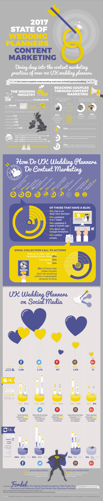

<section>
  <h2>Related posts in our blog</h2>
  <p>
    <ul>
      <li><a href="https://medium.com/@dansallai/wedding-intro-df1d5f51a3f4" target="_blank">Introduction business case</a></li>
      <li><a href="https://medium.com/@dansallai/wedding-part-1-838f859d9757" target="_blank">Part 1: Online visibility, blogging practices, multimedia usage, measurement practices of UK wedding planners</a></li>
      <li><a href="https://medium.com/@dansallai/wedding-part-2-fb1d063fcd3c" target="_blank">Part 2: E-mail marketing, social media and amplification</a></li>
      <li><a href="https://medium.com/@dansallai/wedding-part-3-96994fb4fc83">Part 3: Main takeaways, actual tips</a></li>
    </ul>
  </p>
  <hr>
  <h2>Infographics</h2>
  <p>
    <a href="ig.png" target="_blank"></a>
  </p>
</section>
